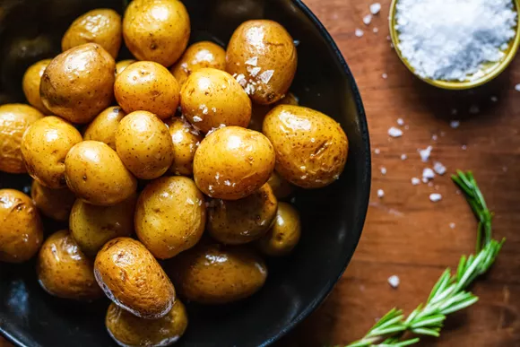

Ingredients
- 1 1/2 pounds baby yellow potatoes, rinsed
- Pinch of sea salt
- 2 sprigs fresh rosemary
- 2 cloves garlic, peeled
- 3 to 4 cups olive oil
- Flaky sea salt, for garnish (optional)
Preparations
- Prep time
- 5 mins
- Cook time
- 60 mins
- Total time
- 65 mins
- Serving
- 4-6 servings
Instructions
-
Preheat the oven to 325ºF.
-
Prepare the potatoes:
Spread the potatoes in a baking dish or deep skillet. It should be large enough for the potatoes to fit in a single layer without a lot of extra space. Sprinkle in a pinch of sea salt. Add the rosemary and garlic. Pour in enough olive oil to just submerge the potatoes. The amount of oil will depend on the size of your vessel.
-
Cook the potatoes:
Set the potatoes in the oven, uncovered, and bake for 1 hour. Use a skewer to test for doneness. Insert it into one of the larger potatoes—there should be no resistance. If still firm, return them to the oven for 10 minutes, or until the potatoes are tender. The exact time will depend on the size of the potatoes.
-
Cool and serve the potatoes:
Leave the potatoes in the oil for 15 minutes to cool just a little. With a slotted spoon, transfer them to a serving dish. Sprinkle with flaky salt, if using, and serve hot.
